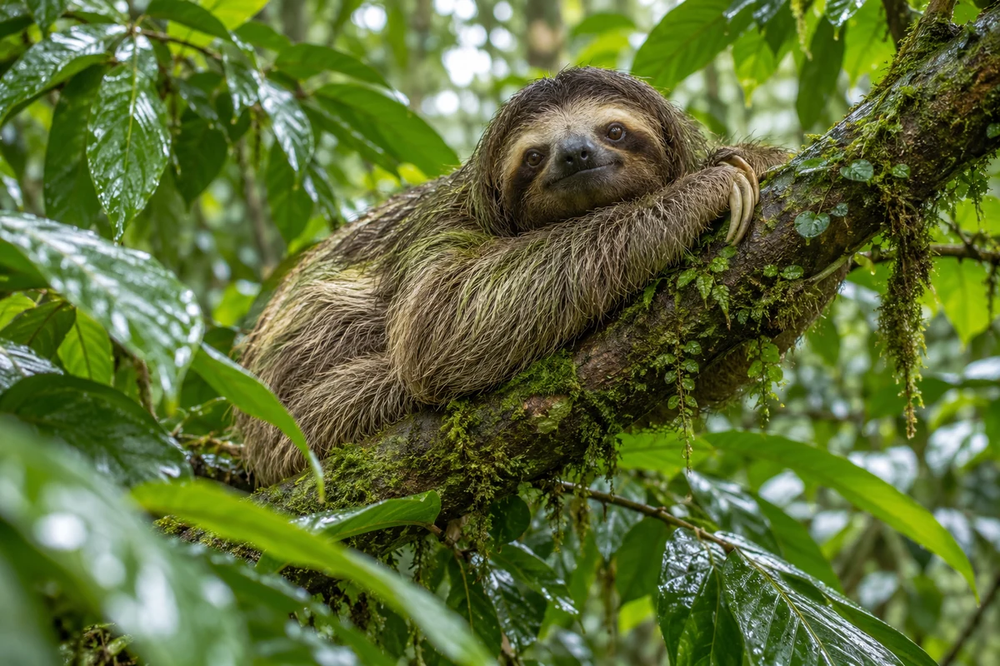
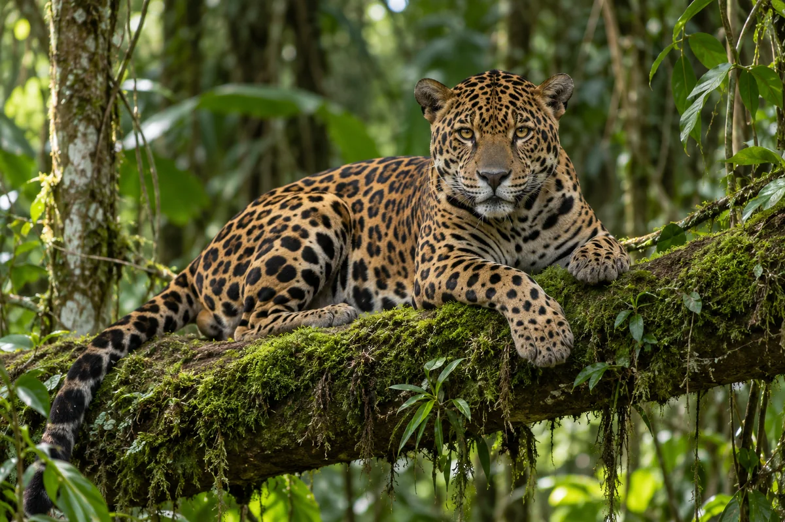
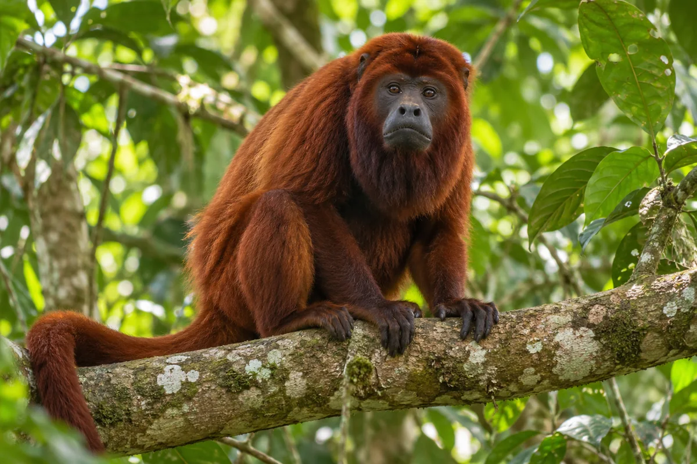
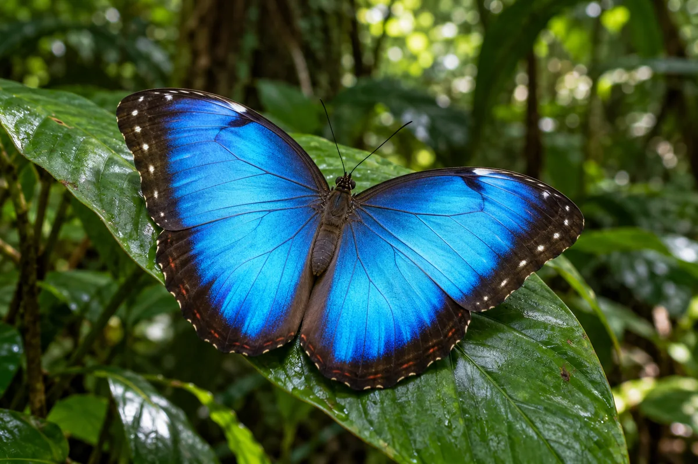
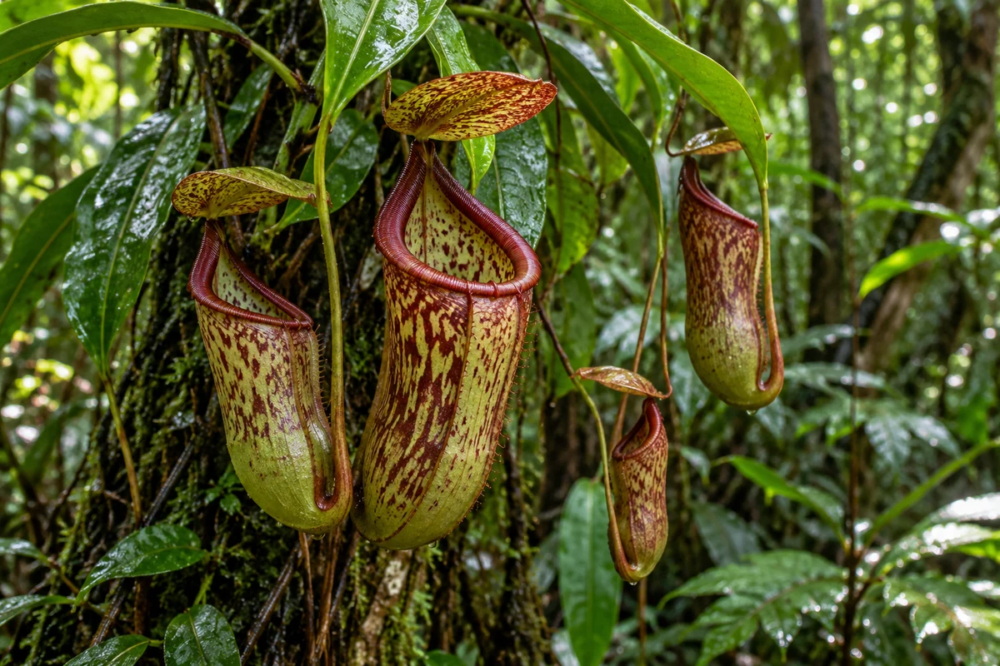
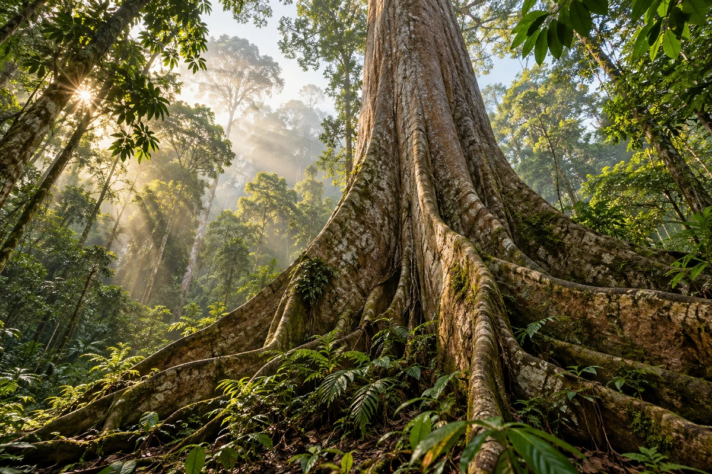
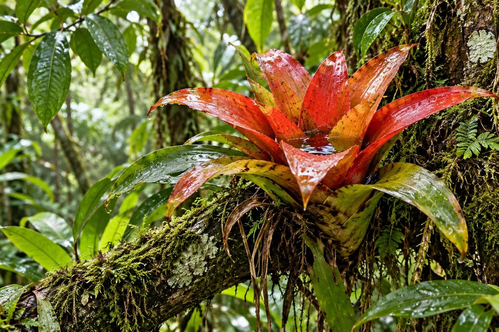
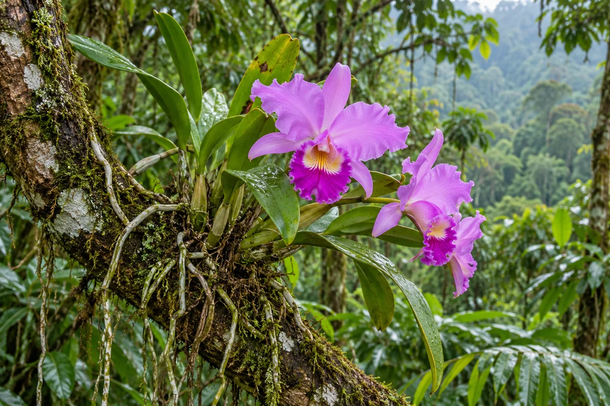
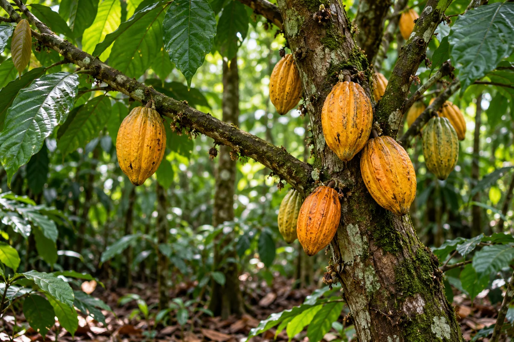
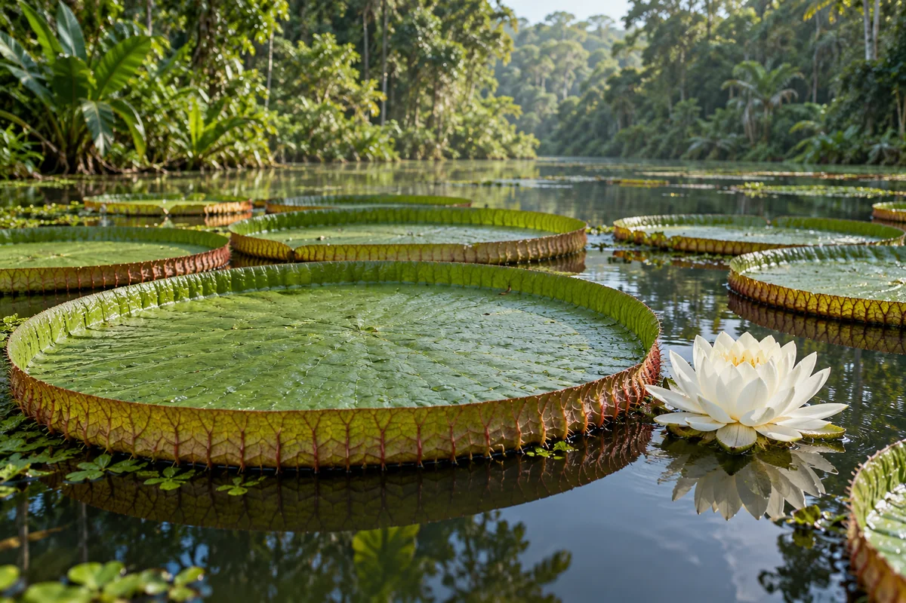

LOMBKORONA
LOMBKORONATukán
Ramphastos toco
Hatalmas, mégis könnyű csőrével gyümölcsöt szed. A csőr a testhőmérséklet szabályozásában is segíti.
A lombkoronától az erdő talajáig
Minden erdőszint külön világ: színes madarak, rejtőzködő állatok és különleges növények élnek egymás mellett. Ismerd meg az esőerdő lakóit!
01 / ÁLLATVILÁG
Hat különleges lakó a lombok közül és az erdő mélyéről.
LOMBKORONARamphastos toco
Hatalmas, mégis könnyű csőrével gyümölcsöt szed. A csőr a testhőmérséklet szabályozásában is segíti.
 ERDŐALJ
ERDŐALJAgalychnis callidryas
Élénk színei és tapadókorongos ujjai segítik a levelek közötti rejtőzködésben és mászásban.

LOMBKORONACholoepus didactylus
Lassú mozgása takarékos életmódot takar. Ideje nagy részét a fák ágai között pihenve tölti. Többnyire csendes; hangminta jelenleg nem érhető el hozzá.

ERDŐALJPanthera onca
Az esőerdő csúcsragadozója kiváló úszó, ezért a folyók és mocsarak sem állják útját.

LOMBKORONAAlouatta seniculus
Megnagyobbodott nyelvcsontja felerősíti a hangját, amely messzire elhallatszik a sűrű erdőben.

ERDŐALJMorpho menelaus
Szárnyainak ragyogó kék színét nem festék, hanem az apró pikkelyekről visszaverődő fény adja.
02 / NÖVÉNYVILÁG
Hat különleges növény, amelyek sajátos módon alkalmazkodtak az esőerdő életéhez.

ERDŐALJNepenthes
Leveleinek végén kancsó alakú csapdák fejlődnek. Az odatévedő rovarokból tápanyaghoz jut.

LOMBKORONACeiba pentandra
Magasra emelkedő koronája és hatalmas támasztógyökerei sok más fajnak adnak élőhelyet.

LOMBKORONABromeliaceae
Levélrózsájában összegyűjti az esővizet, amely apró rovaroknak és más élőlényeknek is otthont ad.

LOMBKORONACattleya
Sok orchidea más növényre kapaszkodva jut fényhez, de a fától nem von el tápanyagot.

ERDŐALJTheobroma cacao
Különleges termései közvetlenül a törzsön fejlődnek; belsejük rejti a kakaóbabokat.

VÍZFELSZÍNVictoria amazonica
Hatalmas, felhajtóerejű levelei a csendes amazóniai vizek felszínén úsznak.